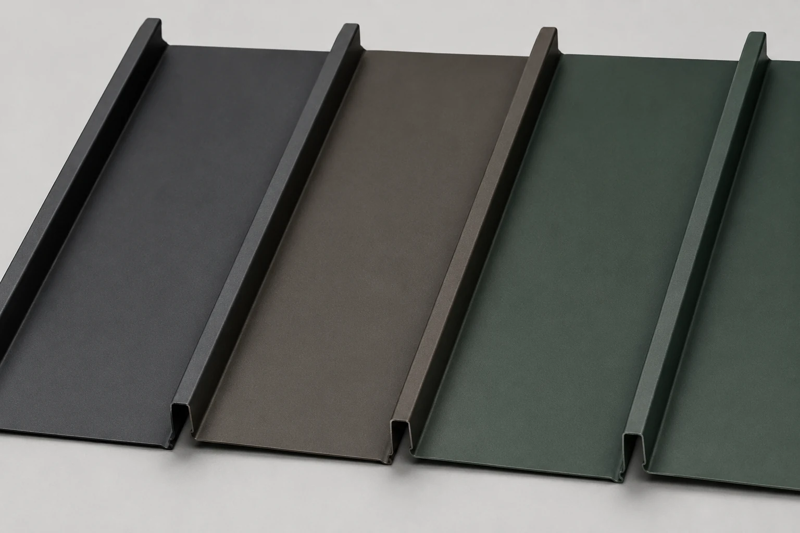
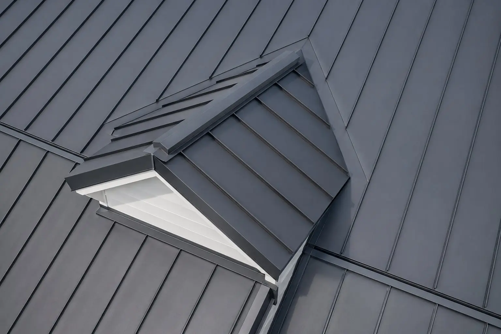

Standing seam metal roofs built for Granville's historic homes and steep Welsh Hills rooflines — a 40 to 70 year roof that sheds snow, oak debris, and storms better than anything else on the market.
Get Your Free Estimate
We respond within one business day. Your info is never shared.
Granville is unlike anywhere else in Licking County — a historic New England-style village around Denison University, full of steep-pitch Victorians, colonial revivals, and older bungalows that deserve a roof matched to their character. Standing seam metal is one of the few modern roofing systems that genuinely complements that architecture instead of fighting it.
The clean vertical lines of a standing seam panel read well on a steep historic roofline, and the matte color options available today — deep charcoals, weathered bronzes, classic greens — sit far more naturally on an older home than a glossy panel ever would. On the steep pitches common in the village, metal's smooth surface also does something asphalt can't: it sheds snow and leaf debris before either has a chance to sit and cause damage.


The mature oak and maple canopy that makes Granville and the Welsh Hills so distinctive is hard on roofs. Heavy autumn leaf fall packs into valleys, holds moisture against shingles, and on tree-shaded north slopes it feeds the ice dams that lift and crack asphalt over a few winters. A smooth standing seam surface gives that debris and snow far less to grab onto — most of it slides off before it can do harm.
Concealed-fastener standing seam has no exposed screw heads to back out and leak over time, which is exactly the failure mode we see on older exposed-fastener metal and aging shingle roofs across the county. Where controlled snow shedding matters — over a front entry or walkway — we add snow guards so the roof sheds where you want it to, not onto your doorstep.
A standing seam metal roof is a longer-term investment than asphalt — here's what that buys you on a Granville home.
Metal roofing is one part of what we offer Granville homeowners. Explore the rest of our services.
What Granville homeowners ask us most about standing seam and metal roofing.
Have a question not listed here? Call us — we answer the phone.
(740) 527-0222 Request Free EstimateWe serve Granville and every community in Licking County. Call or fill out the form and we'll be in touch within one business day.
We respond within one business day.